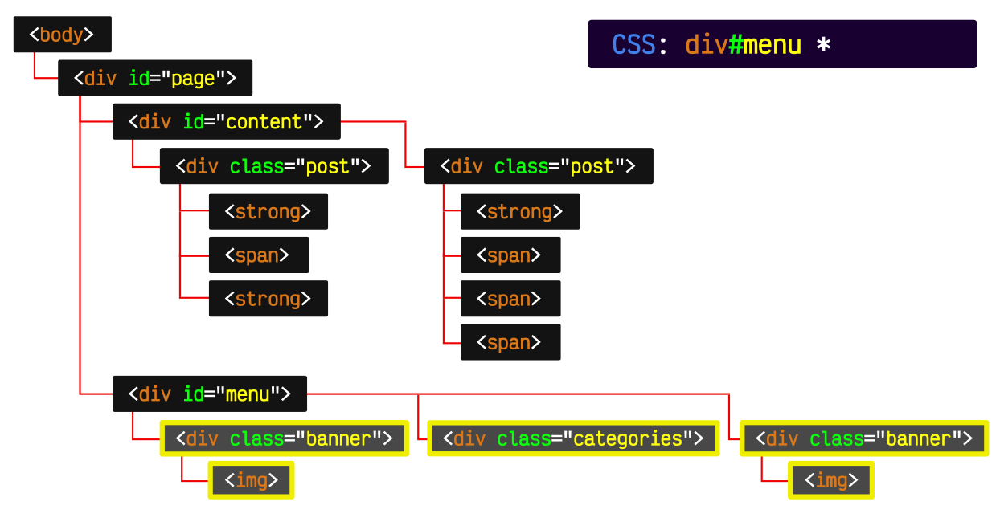
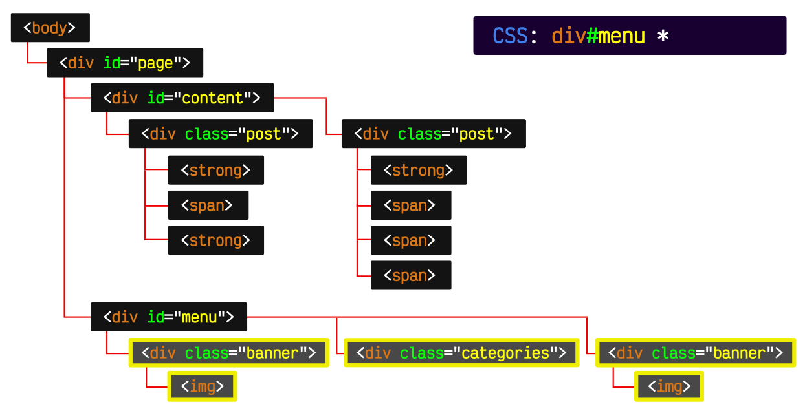

Ir al index principal
¿Que son los selectore?
Los selectores CSS son patrones de texto que el navegador utiliza para identificar los elementos HTML y XML a
los que se les aplicarán las reglas de estilo de una hoja de CSS. Permiten seleccionar elementos basados en su
etiqueta, identificadores (id), clases (class), atributos, y la relación con otros elementos en el árbol del
documento, como ser un hijo o descendiente
Tipos de etiquetas
- Selectores de tipo o etiqueta:
Seleccionan todos los elementos con una etiqueta HTML específica.
Ejemplo: p selecciona todas las etiquetas.
- Selectores de ID:
Seleccionan un elemento HTML específico que tiene un atributo id único, usando el símbolo #.
Ejemplo: #mi-id selecciona el elemento con id="mi-id"
- Selectores de clase:
Seleccionan todos los elementos que tienen un atributo class específico, usando el símbolo ..
Ejemplo: .mi-clase selecciona todos los elementos con class="mi-clase"
- Selectores de atributo:
Seleccionan elementos según la presencia de un atributo o el valor de ese atributo.
Ejemplo: a[target] selecciona todos los elementos que tengan el atributo target.
- Combinadores:
Permiten definir la relación entre los selectores.
Descendiente (espacio): div p selecciona todos los párrafos que están dentro de un div.
- Hijo (>): div > p selecciona solo los párrafos que son hijos directos de un div.
- Hermano Adyacente (+): h2 + p selecciona el párrafo que sigue inmediatamente a un h2.
- Hermano General (~): h2 ~ p selecciona todos los párrafos que siguen a un h2 y comparten el mismo padre.
 
La importancia de los selectores CSS radica en su capacidad para definir con precisión a qué elementos HTML aplicar estilos,
permitiendo un control detallado sobre la apariencia de un sitio web. Al utilizar diferentes tipos de selectores,
los desarrolladores pueden escribir código más limpio, eficiente y mantenible, evitando estilos repetitivos y facilitando la actualización y modificación de los diseños web.
Además, los selectores son fundamentales para crear diseños adaptables y mejorar la experiencia del usuario

La importancia de los selectores CSS radica en su capacidad para definir con precisión a qué elementos HTML aplicar estilos,
permitiendo un control detallado sobre la apariencia de un sitio web. Al utilizar diferentes tipos de selectores,
los desarrolladores pueden escribir código más limpio, eficiente y mantenible, evitando estilos repetitivos y facilitando la actualización y modificación de los diseños web.
Además, los selectores son fundamentales para crear diseños adaptables y mejorar la experiencia del usuario